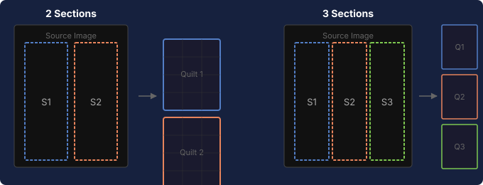

Convert images into a Looking Glass quilt layout
Sections split each source image into vertical strips, each cropped to your device's aspect ratio. This is used for side-by-side Looking Glass displays where one wide image is divided into separate quilt files.

Drop PNG images here or click to select
Images will be sorted by filename